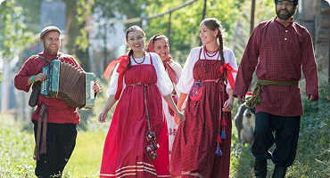
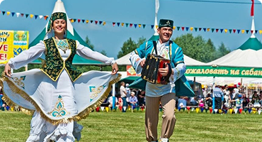
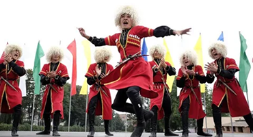
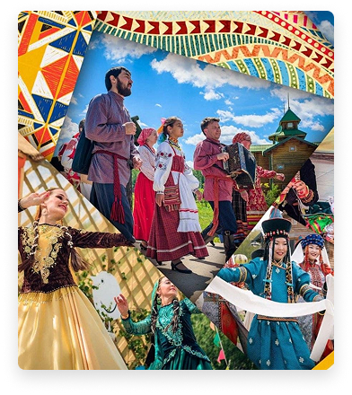

2026 - год Единства народов России
Россия — многонациональное государство, в котором проживают более 190
народов,
каждый из которых обладает уникальной культурой, традициями и языком.
Наша сила — в единстве этого многообразия.
Народы России
Каждый народ вносит свой уникальный вклад в культурное богатство нашей страны. Вот некоторые из них:

Русские
Самый многочисленный народ России, составляющий более 80%
населения.
Русская культура известна своей
литературой, музыкой,
архитектурой и
народными традициями.

Татары
Второй по численности народ России.
Татарская культура славится своей
кухней, поэзией и праздниками, такими
как Сабантуй.

Народы Кавказа
Чеченцы, аварцы, осетины, ингуши и
другие кавказские народы сохраняют
свои древние традиции, знаменитое
кавказское гостеприимство и
уникальные ремесла.
Регионы России
Российская Федерация состоит из 89 субъектов, каждый из которых уникален по своему национальному составу и культурным особенностям. Из них — 24 республики, являющиеся национальными образованиями крупнейших народов России.
Культурное наследие
Культурное разнообразие России — это наше общее достояние. Традиции, языки, народные промыслы и праздники разных народов создают неповторимую мозаику российской культуры.
- В России говорят более чем на 270 языках и диалектах
- Народные промыслы России известны по всему миру: гжель, хохлома, жостово, палех
- Традиционные праздники народов России отражают их историю и верования
- Национальные кухни народов России отличаются разнообразием и оригинальностью
Государство поддерживает сохранение и развитие культур всех народов России через образовательные программы, фестивали и финансирование культурных проектов.

Сила в единстве
Единство народов России — это не просто слова, а исторически
сложившаяся реальность. На протяжении веков разные народы совместно
строили наше
государство, защищали его от врагов, развивали экономику и культуру.
Сегодня, в XXI веке, принцип "единство в многообразии" становится все
более актуальным. Уважение к культуре, языку и традициям каждого
народа,
живущего в России, — залог стабильности и процветания нашей страны.
- Конституция России гарантирует равные права всем гражданам независимо от национальности
- Во всех регионах России созданы условия для сохранения и развития национальных культур
- Образовательные программы включают изучение культуры и истории народов России
- Межнациональные браки в России — обычное явление, что укрепляет связи между народами